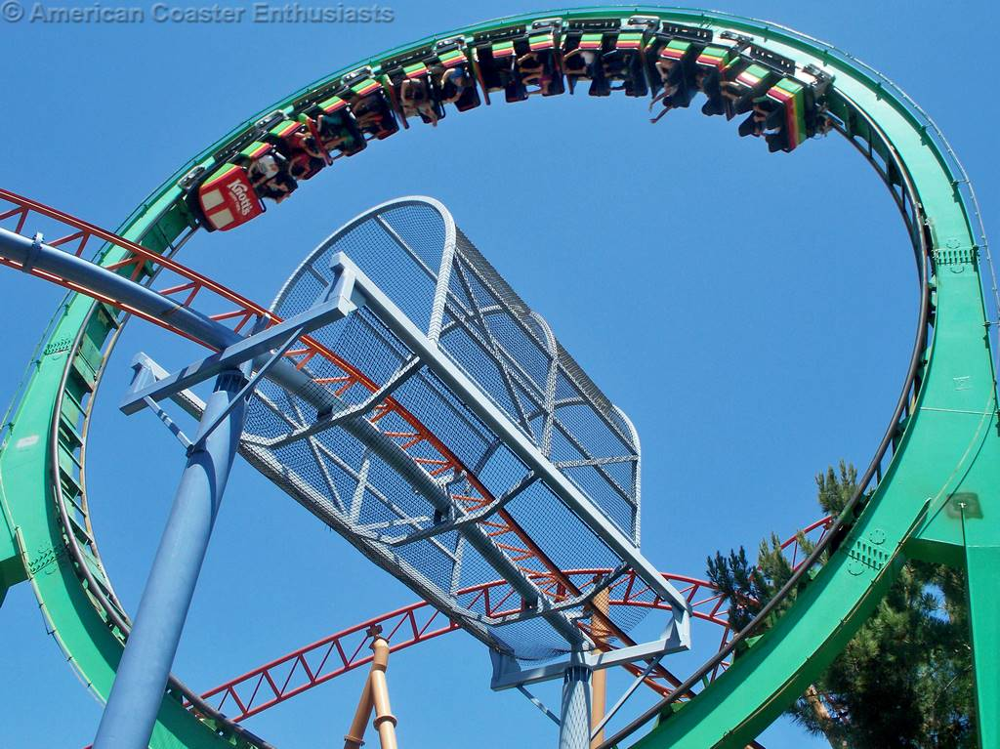

All of the many parks and manufacturers are constantly trying to one up each other. They want to do new things that no one has done before, in order to catch the eye of park goers. They work with new materials, create new elements, break major records, and many others. The coaster industry is always evolving, and throughout the years we have seen lots of new and unique rides be built.
Matterhorn (1959)
Disneyland
World's first steel coaster

Montezooma's Revenge (1978)
Knotts Berry Farm
World's first launch coaster
The Bat (1981)
King's Island
World's first suspended coaster (train under the track and it swings horizontally)
Magnum XL-200 (1989)
Cedar Point
World's first hyper coaster(over 200 feet)
Batman The Ride (1992)
Six Flags Great America
World's first inverted coaster (train under the track that doesn't swing, and has inversions which differentiates it from the suspended coaster)
Millenium Force (2000)
Cedar Point
World's first giga coaster (over 300 feet)
X2 (formerly X) (2002)
Six Flags Magic Mountain
World's first 4D coaster (seats rotate vertically)
Top Thrill Dragster(2003)
Cedar Point
World's first strata coaster (over 400 feet)